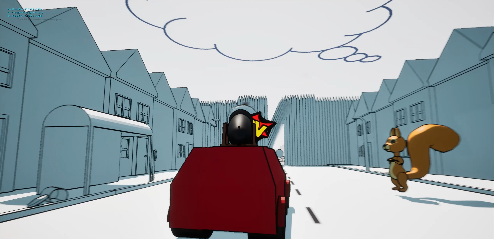
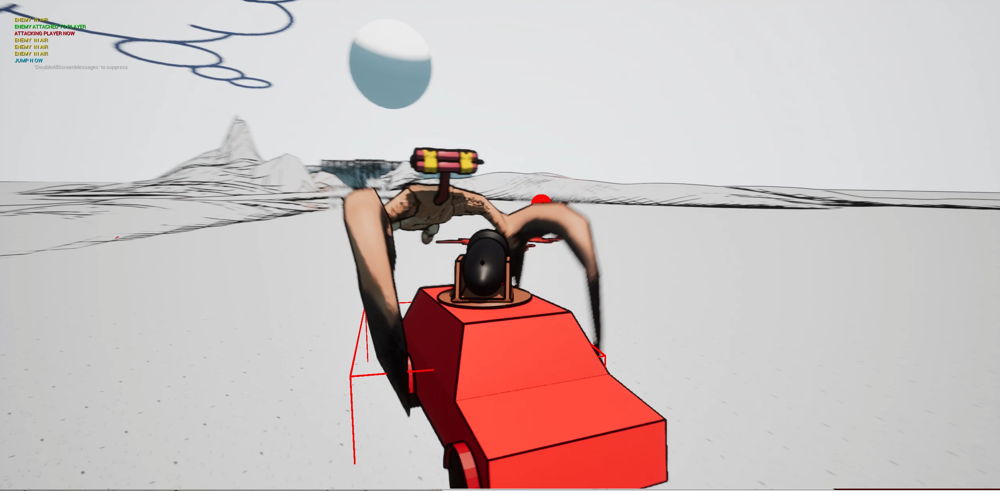
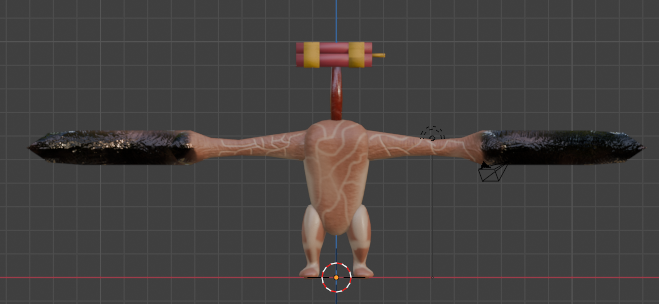
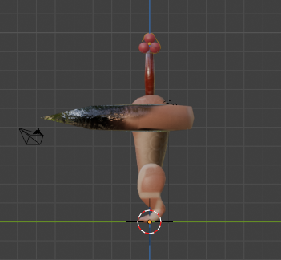
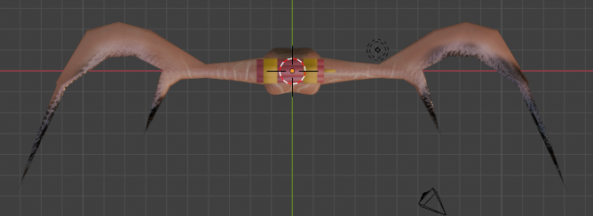
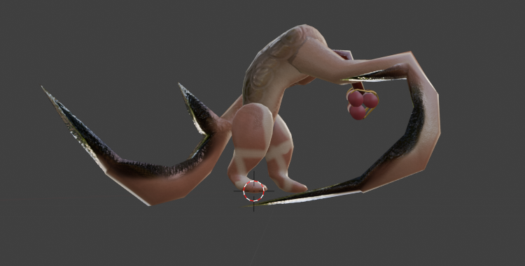
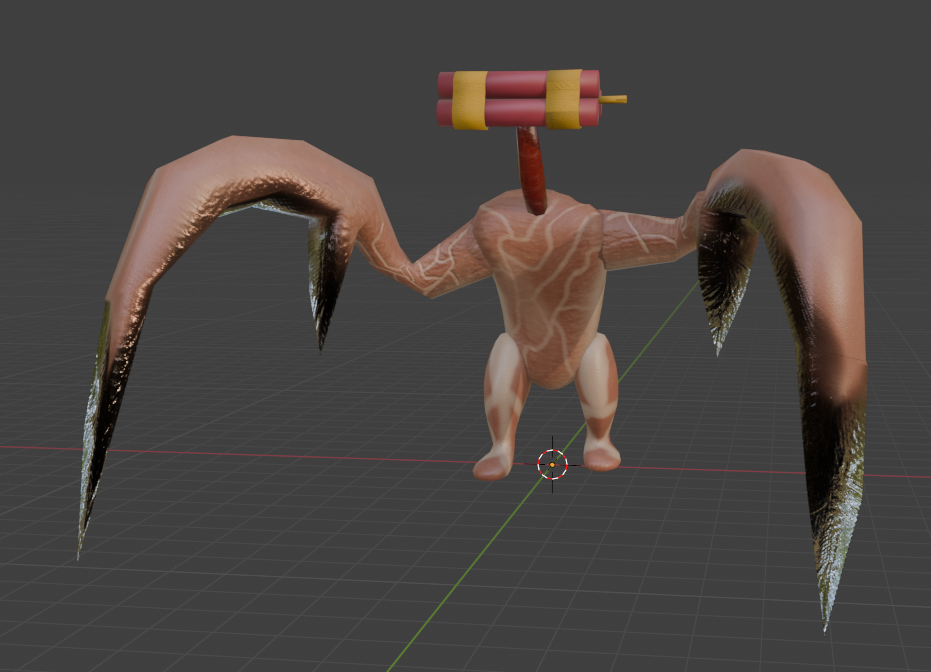
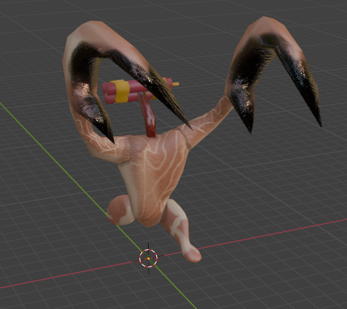
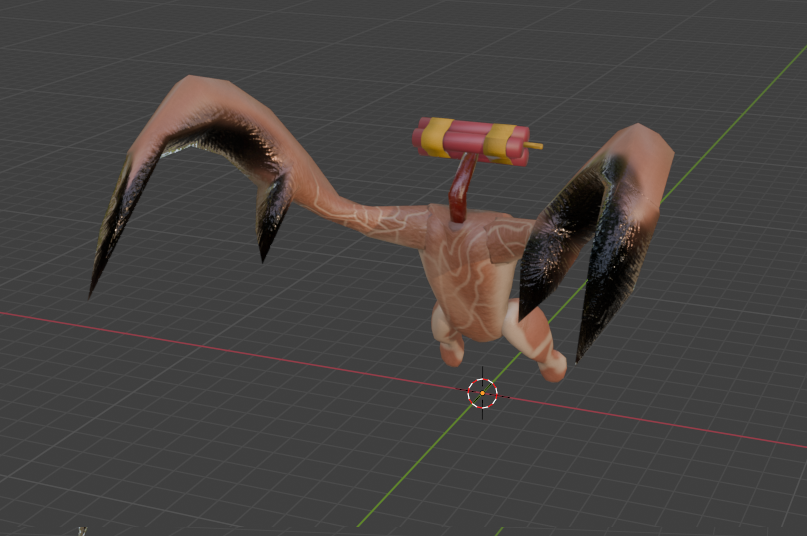
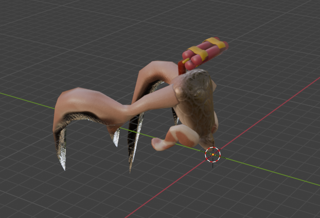

Kurzbeschreibung
Primär ist dieses Projekt eine Testumgebung für meinen outline-shader, den ich mit Hilfe eines Tutorials erstellt habe. Dies ist mein erster Ansatz eigene Shader zu erstellen. Der Fahrzeug-Prototyp ist spontan dazu entstanden.
Hintergrund
Einen eigenen Shader zu erstellen lag für mich noch auf meiner To-Do-Liste für 2025. Der standard Unreal Engine-Look störte mich nach so vielen Projekten. Der hier erstellte Outline-Shader hat mir so sehr gefallen, dass ich unbedint etwas World-Building machen wollte, um zu prüfen ob der Shader wirklich voll einsatzbereit ist oder noch Probleme aufweist. Außerdem wollte ich mit der Kanone auf dem Auto mein Animations-Können auf die Probe stellen: Ziel war es eine Kanone zu animieren, die aus dem Auto "ausfährt" und sich in Richtung der Mauszeiger-Position sinnvoll mitdreht. Dies funktionierte auch ziemlich problemlos. Zu dieser Zeit habe ich auch Substance Painter getestet. Das Ergebnis in Substance Painter hat mir so sehr gefallen, dass ich unbedingt einen voll animierten Gegner für diesen Prototyp erstellen wollte.
Spielablauf (Idee - noch nicht umgesetzt)
- Spieler startet in Nachbarschaft(Basis). Dort gibt es Aufgaben für Anwohner zu erledigen. Mit Ressourcen kann der Spieler Gebäude upgraden und so neue Upgrades für das Auto freischalten.
- Hat sich der Spieler fertig vorbereitet, verlässt er die Stadt (im Auto) und erkundet die Umgebung("Erkundungs-Phase" beginnt). Die Tank-Ladung ds Autos beschränkt die Reichweite in der sich der Spieler bewegen kann, der Spieler muss mit seiner Tank-Ladung auch wieder zurück in die Nachbarschaft kommen.
- In der Erkundungs-Phase trifft der Spieler auf Gegner, welche er mit seinen Waffen ausschalten kann um Ressourcen zu erhalten. Außerdem lässt sich je nach Ausstattung des Autos mit gewissen Dingen in der Spielwelt interagieren (Beispiel: Spieler nimmt "Feuerlöscher-Aufsatz" mit -> In der Erkundungs-Phase kann er auf ein brennendes Auto mit einem NPC treffen, wenn er das Auto löscht erscheint der NPC in der Nachbarschaft und neue Upgrades werden freigeschaltet)
- Wichtig: Dies ist nur die grobe Planung/Idee für dieses Projekt. Bisher implementiert ist Folgendes: Aus- und Einsteigen in das Auto ; Kanone + Schuss-Mechanik (noch keine Schaden-Logik) ; ein Gegner samt Animationen (Animationen: patroullieren, Spieler entdecken, zum Spieler laufen, (am Spieler angekommen) auf den Spieler zu-springen, Spieler angreifen) und Angriff-/Sprung-Logik des Gegners


Technische Details
- Engine: Unreal Engine (Blueprints / Visual Scripting)
- 3D-Models: Blender + Substance Painter
- Source Control: GitHub.
- Solo-Projekt
- Status: Prototyp, unveröffentlicht.
Herausforderung → Lösungsweg
- Herausforderung: Kanone zur Mauszeiger-Position drehen ("LookAt-Node" ließ die Kanone merkwürdig aussehen)
- ->Lösung: Rotation der Kanone beschränken: Die Rotation der unteren Platte, auf der die Kanone befestigt ist, nur auf die Z-Achse beschränken. Die Rotation für die Kanone selbst wurde auf die Z- und Y-Achse beschränkt, dadurch bewegt sich die Kanone nun vertikal und horizontal entsprechend des Mauszeigers mit, ohne durch die Halterung der Kanone zu clippen.
- Herausforderung: Outline-Shader hat teilweise sehr große schwarze Flächen erstellt (dort, wo der Winkel in dem auf die Objekte geschaut wird, zu schmal wird) und an einigen Stellen geflackert.
- ->Lösung: Viele Änderungen an den Variablen des Outline-Shaders, und zusätzliche Variablen erstellt, die sowohl das Flackern als auch die großen schwarzen Flächen reduziert haben. Sehr wenige Stellen flackern immer noch, dafür brauche ich noch weitere Lösungen.
Learnings
- Substance Painter ist sehr hilfreich um schnell schönere Texturen zu erstellen.
- Shader-Basics verstanden.
Downloads / Links / Screenshots
Nicht vorhanden. Steht aktuell nicht in der Planung fortgeführt zu werden, auch wenn mir die Idee und der Style des Spieles sehr gefällt.
← Zurück zum Portfolio MOREUnveröffentlichte Projekte
- Bomber Enemy (Fahrzeug-Prototyp) -
Kurzbeschreibung
Dieses Asset wurde hauptsächlich zum Testen von Substance Painter genutzt. Die Texturen haben mir so sehr gefallen, dass ich die Idee dieses Gegners gerne weiter umgesetzt sehen wollte, weshalb ich die Animationen erstellt, und diesen Gegner samt seinen Animationen in den Fahrzeug-Prototyp eingebaut habe.

Ansicht: Vorne

Ansicht: Seite

Ansicht: Oben
- Bomber Enemy: Animations -

Animation: Patroullieren

Animation: Spieler erkennen

Animation: Lauf zum Spieler

Animation: Sprung auf Spieler
